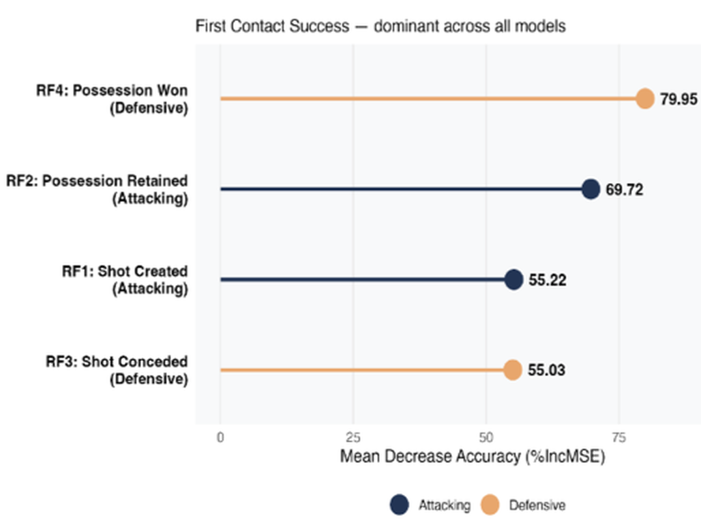
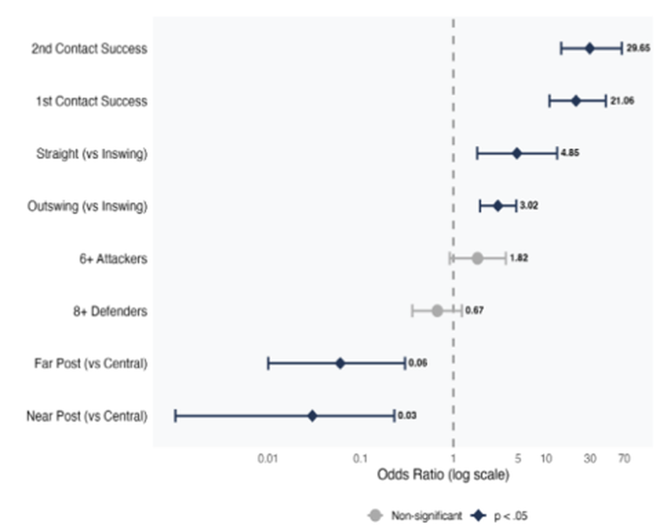

WC2022 Set-Piece Analysis
MSc dissertation at Leeds Beckett University: Tactical Determinants of Corner Kicks and Throw-in Outcomes at the 2022 FIFA World Cup. An attacking and defensive analysis of every corner kick and throw-in across all 64 matches of the 2022 World Cup, using StatsBomb event data with 360 freeze-frame positional data, to find what actually predicts a successful set piece.
569 corner kicks and 972 throw-ins, all from the 2022 World Cup.
Odds of a shot when a corner's first contact is won. Second contact was stronger still, at OR 29.65 (both p < .001).
Possession retained from backward throw-ins, against forward throw-ins.
xG per attempt conceded against zonal marking versus hybrid marking.
What I found
Corners come down to the first contact. Winning the first contact was the dominant variable across every model, ranking first in the random forest variable importance and carrying the strongest association with shot creation. Delivery type predicted whether a team kept possession, while target zone independently predicted whether a shot followed.
Zonal marking gave up the most shots but the worst chances. It conceded the highest share of shots (44.6%) but the lowest xG per attempt (0.09, against 0.19 for hybrid marking). The effect of marking structure was largely overtaken by who won the first contact.
Throw-ins are about direction. Direction was the dominant predictor of possession retention (w = 0.324). Shot creation from throw-ins in the attacking third could not be predicted from the delivery variables I examined (R² = 0.010).
Figures


What it means for coaches
Set piece coaches should put their effort into creating favourable first-contact conditions: blocks, screens and decoy runners. And a team's defensive structure should be judged on the quality of shots it concedes, not how many.
Interactive companionMarking structure plots built from 360 freeze-frame data, with supporting definitions and example clips.
Open companion site ↗